Contents: 1. Trig Ratio 2. Right Triangle Problems 3. Area of Triangle, using tri. Ratio 4. 3D Problems 5. The Sign Rule 6. The CoSign Rule
Unit 2 Preview - Geometric Ratio
Goal: Students will overview Unit 2.
Warm-up
Q1. Find the meaning of the following words on the Internet and write in your notebook
1) Pythagorean Theorem: 2) Right-angled Triangle:
- Copy the unit 2 targets
- Students will create and use two- and three-dimensional representations of authentic situations.
- Students will solve geometric problems involving inaccessible distances using basic trigonometric principles, including the Law of Sines and the Law of Cosines.
Classwork:
Lesson 1: Trig Ratio - Right Angle Trigonometry
Content Goal: Students can identify right triangles and understand the distance formula to find a distance from two points.
warm-up
Solve the following question.
Q: There is a right-angle triangle with three lengths; 3cm, 4cm, and the longest side x cm.
Draw the triangle and solve for the missing side x, using the Pythagorean Theorem.
*Watch the video and take the video note down
Classwork: Go to Canvas and take a quiz: Unit 2 Right-angled Triangle Quiz
Lesson 1-1: Trig Ratio - Right Angle Trigonometry
Content Goal: Students can research the definition and explanation of Pythagorean Theorem.
Warm-up: Copy and Use AI to solve the following problem.
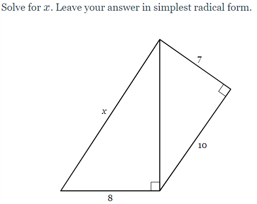
Classwork;
- Search the internet to find definitions and explanations of the Pythagorean Theorem in a word doc.
Lesson 1-2: Trig Ratio - Right Angle Trigonometry
Content Goal: Students can understand the three ratios around a right-angle triangle.
Warm-up: Copy the following into your notebook.
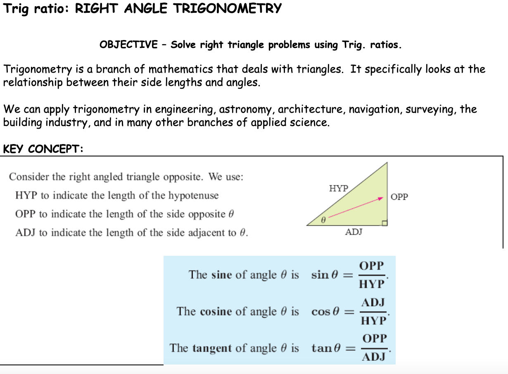
[Document: L1 trig ratios — owner to add sharing link]
Please go to Canvas and create prompts for the formative assessment: Unit 2 Pythagorean Theorem Prompts
- Prompt for Definition of the Pythagorean Theorem clearly and accurately.
- Prompt for Explanation of the Pythagorean Theorem with the formula (including what each variable represents) in simple terms.
Lesson 1-1: Trig Ratio - Right Angle Trigonometry
Goal: Students can collect information on trig. ratio
- Classwork:
Finish up
- Right-angled triangle quiz.
- The Pythagorean Theorem prompt assessment.
- Keep your cellphone only when you get those tasks done, or
put it in the class cellphone pocket
- Watch the video and take the notes in your notebook.
Lesson 2-1: Right-Angled Trig. problems
Goal: Students can create and use two-dimensional representations to model authentic situations (AMDM.GSR.10.1).
Warm-up
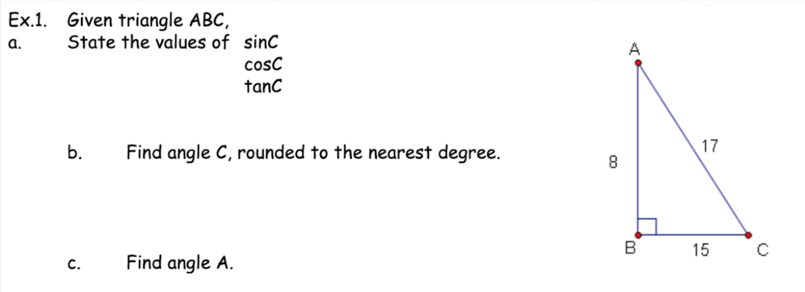
Classwork: This is a separate task from yesterday, which was the Unit 2 Pythagorean Theorem Prompt
Today, using the prompt you made yesterday,
Create a Word document for the first paragraph of the Essay and upload it to the Unit 2 Pythagorean Theorem Paragraph
Lesson 2-2: Trig Ratio problem
Goal: Students can review Pythagorean Theorem and Trig. Ratios
Warm-up:
Q. Use a calculator to find the value of
1) Tan(20)=
2) Sin(30)=
3) Cos(40)=
Q2. If Sin(x)=0.5, then what is x?
Watch the video on the right and take the video notes down
Lesson 2-3: Right-Angled Trig. problems
Goal: Students can create and use two-dimensional representations to model authentic situations (AMDM.GSR.10.1).
Scenario: The Mystery of the Solar Array Setup
Context
The school is installing a new solar panel on the roof to power the STEM lab. The installation supervisor left an incomplete project schematic on the table, along with a note saying they had to leave for an urgent site visit.
Here is the note and the unfinished diagram left behind: WORK ORDER #402
Project: Roof Solar Panel Installation
Status: INCOMPLETE – Action Required by STEM Class
- Panel Frame Length: 8 feet (Hypotenuse)
- Optimal Roof Tilt Angle: 32-degree Angle
- Vertical Support Height: [MISSING DATA]
- Horizontal Roof Footprint: [MISSING DATA]
Supervisor's Note:
"To complete the mounting bracket assembly, we need the exact height (h) for the vertical support post and the horizontal distance (d) the panel will cover on the roof surface. Use the right-angled triangle schematic below to solve for h and d before the mounting crew arrives at 2:00 PM."
Discussion Prompt: "The school has a fixed budget of $500 for the mounting brackets. Standard 4-foot support posts cost $35 each, while custom 4.24-foot posts (required for the exact 32 angle) cost $120 each. Is it better to stick with the exact optimal tilt angle using expensive custom posts, or adjust the angle slightly to use standard, cheaper posts and buy an extra panel with the savings? Debate which setup gives the school the best long-term value."
Discussion Prompt: "To capture peak sunlight in winter, panels need a 45 degree angle tilt, but in summer, they only need a 15 degree angle tilt. Since these panels will be permanently fixed on the roof, what single angle should the school choose? Consider factors like peak energy usage during the school year versus summer break."
Discussion Prompt:
- The Solar Engineer wants a steep 40° angle to maximize energy capture during winter months.
- The Safety Director wants an angle under 20° to minimize wind resistance during severe storms.
- The Facilities Lead wants to fit at least 4 rows of panels on the roof, which requires keeping row spacing (and shadow length) to a minimum.
Lesson 2-3: Right-Angled Trig. problems
Goal: Students can create and use two-dimensional representations to model authentic situations (AMDM.GSR.10.1).
Warm-up; Copy the following angle elevation & depression, and solve the question below
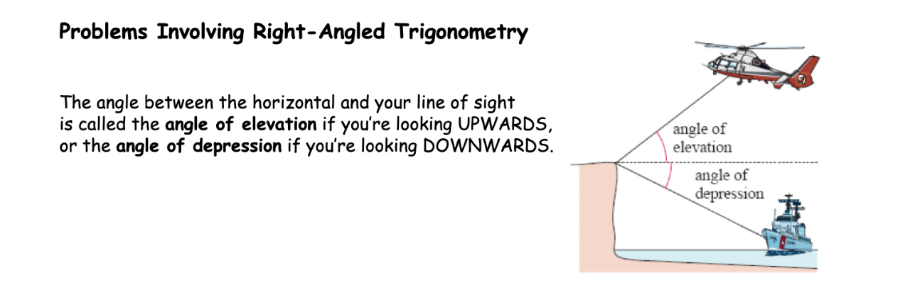
Question 1. Copy and solve the problem.
Classwork:
Go to Canvas and take the quiz - Unit 2 Trig. Ratio Quiz
Lesson 2: tri. Ratio Research
Goal: Students can research topic and collect information
Warm-up: copy and solve the following problem in your notebook.
Classwork:
Please fix and complete any missing assignments: Pythagorean Theorem Prompt, Pythagorean Theorem Paragraph, Unit 2, Trig—ratio Quiz.
Lesson 2-3: Trig. problems
Goal: Students can create and use two-dimensional representations to model authentic situations (AMDM.GSR.10.1).
Warm-up: Copy the following example.
We already practiced twice for this problem. Now, you will solve this either by hand or using A.I.
Example: "You’re standing 40 feet away from a tree and measure the angle of elevation to the top as 35°. How tall is the tree?" (10 minutes)
AI for Exploration (10 minutes)
I encourage you to ask AI (like ChatGPT) in ways that deepen understanding, not just get the final answer.
Here are some prompts you could try:
- “Check my work: I found the tree’s height to be 28 ft. Is this correct?”
- “Explain step by step how to solve a height problem using tangent.”
- “Can you show me a different trig ratio that could also solve this?”
- “Create a real-world trig problem about skateboarding ramps and help me solve it.”
- “Generate a trig problem about 'drones' that involves sine or cosine, not tangent.”
Your reflection!
How did AI help you understand the concept, not just get the answer?
What new questions did AI’s explanations make you think of?
Where might trig ratios matter in real life beyond class?
Notebook Check 4
Goal: Students can organize the notes by date.
Your notebook should include all the headings, warm-ups, videos, and reflections from Sep. 23 to Oct 2nd.
The dates and Contents are as follows.
Put down your grade on Canvas in the folder: Notebook Check 4
- Sep. 23: Heading, Warm-up, reflection
- Sep. 25: Heading, Warm-up, 1 video, reflection
- Sep. 26: Heading, Warm-up, reflection
- Sep. 29: Heading, Warm-up, reflection
- Sep. 30: Heading, 1 video, reflection
- Oct. 1: Heading, Warm-up, reflection
- Oct. 2: Heading, Warm-up, 1 video, reflection
Notebook grading
- 7 Headings: 2.85pts/Heading
- 6 Warm-ups: 6.7pts/Warm-up
- 3 videos: 10pts/Video
- 7 reflections: 1.25pts/Ref.
Lesson 3: Area of Triangle, using tri. Ratio
Goal: Students can solve area problems, using sine ratio (AMDM. GSR.10.1)
- Copy the following into your notebook
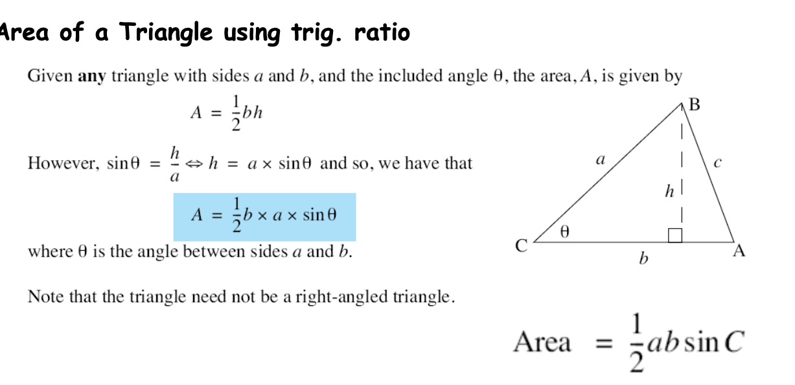
- Watch the video and take the notes down
Class Activity
- Make sure to finish the two formative tasks: Pythagorean Theorem Paragraph, Trig. Ratio Quiz
[Document: L4 Area of a Triangle — owner to add sharing link]
Review
Goal: Students can make a paragraph of Trig. Ratio
The Pythagorean Theorem Paragraph grade will be put in I.C. today.
Class Work: Famative Task
Unit 2 Trig. Ratio Paragraph: Write a paragraph of 130~150 words:
Definition and Explanation of the Trig. Ratio, including the "Formula"
Submit on Canvas under Unit 2 Trig. Ratio Paragraph.
Make sure to consider the writing format as follows: 1. Heading, 2. Title, 3. Indent the first line, 4. Times New Roman, 5. Font size:12, 6. Citation
Lesson 4: 3D Problems
Goal: Students can solve real life application problems using trig ratio.
Warm-up: Copy and solve
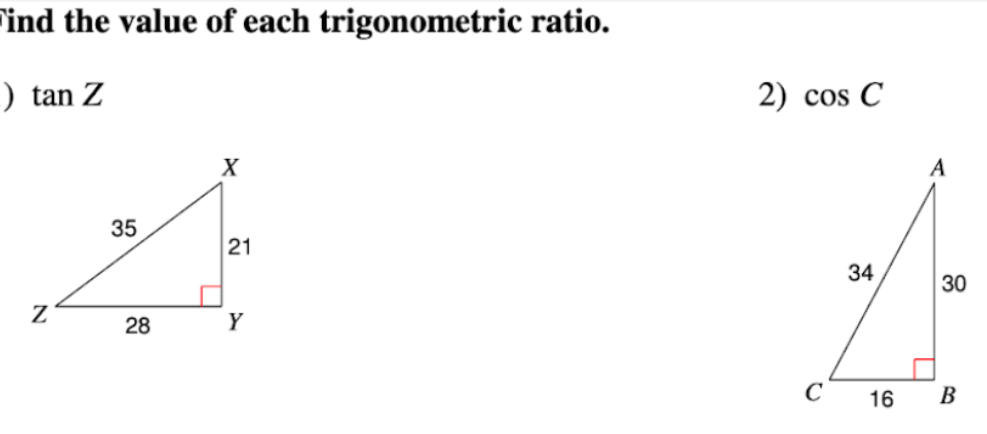
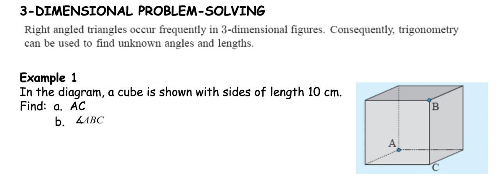
Classwork: Finish up the Unit 2 Trig. Ratio Paragraph.
Lesson 5: Sine Rule
Goal: Students can solve problems involving inaccessible distance using trig ratios. (AMDM. GSR. 10.2)
Warm-up: Find the area of the triangles below and Copy the Sine Rule below
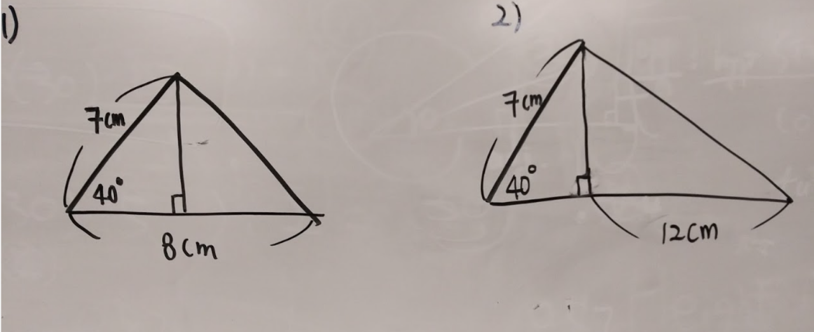
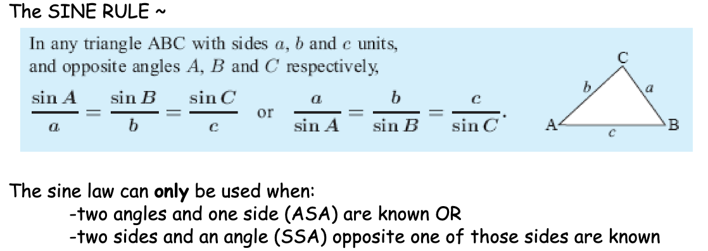
Lesson 5: Sine Rule
Goal: Students can solve problems involving inaccessible distance using trig ratios. (AMDM. GSR. 10.2)
Warm-up: Draw a triangle and find length c
Class Activity:
- Watch the video and copy the notes.
- Search and collect "Real-life examples of Pythagorean theorem" and Trig. Ratio in a word document,
Lesson 6: Cosine Rule
Goal: Students can solve for a side with the law of cosines
Warm-up:
Q1. Draw a triangle FGH, given h = 12.9 cm, g = 3.7 cm, ∠F = 47˚
Q2. Solve a triangle ABC given a=12 cm, ∠A = 40˚, and ∠B = 50˚. What is the length b= ?
Copy the following
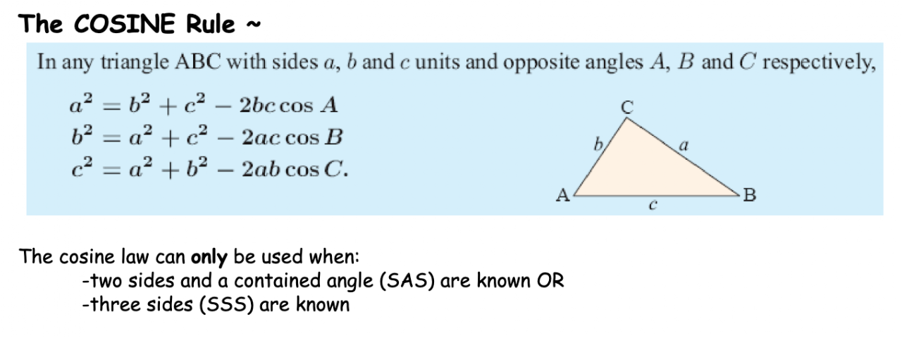
Classwork:
- Go to Canvas and take the Unit 2 Sine Rule Quiz.
- Finish any missing assignments tomorrow, on Oct. 23rd:
- Pythagorean Theorem Prompts
- Pythagorean Theorem paragraph
- Trig. Ratio paragraph
- Unit 2 Trig. Ratio Quiz
- Notebook check 4 grade will be put on I.C.
[Document: L5 The Cosine Rule — owner to add sharing link]
Lesson 6: Cosine Rule
Goal: Students can solve for a side with the law of cosines
Warm-up: Copy and solve the problem
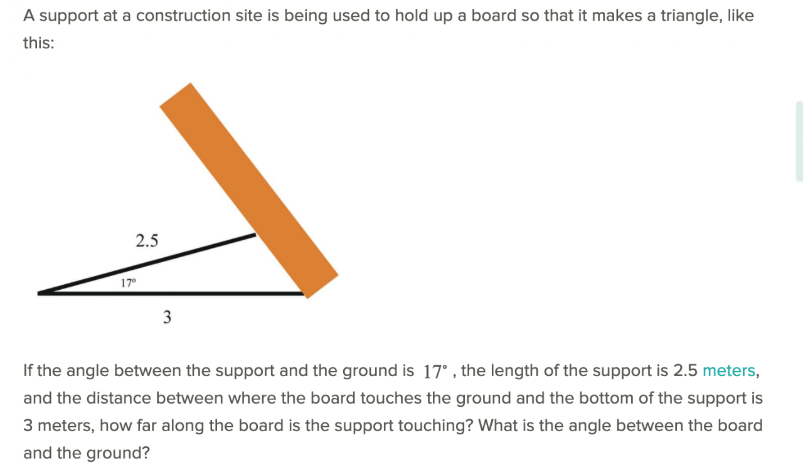
- Watch the video and copy the notes.
A Real life example of Cosine rule
Review and Research
Goal: Students can review for the Unit 2 major summative assessments.
Unit 2 Review
- Pythagorean Theorem
- Trig. Ratio
- Area of a triangle, using trig. ratio
- Sine Rule
- Cosine Rule.
Class Activity: Research a real life example.
- Go to Google and type your chosen topic
- Click on image button to collect real life examples for your unit test.
Major Summative Assessment
Goal: students can finish up Math essay.
Unit 2 Test on one of the following topics.
- Pythagorean Theorem
- Trig. Ratio
- Area of a triangle, using trig. ratio
- Sine Rule
- Cosine Rule.
- In a Word Doc., make the first two paragraphs with the help of A.I. or your own research.
Things to remember.
- Effective prompts are essential for creating your desired paragraph.
- You might need five or more interactions with the AI to get a satisfactory result.
- Double-check the formula or calculation for typos immediately after copying and pasting it into the paragraph.
Submit your work on Canvas under the folder: Summative Test 2
- -10 points if not submitted by the end of the period.
Notebook Check 5
Goal: Students can organize the notebook.
- Oct. 3: Heading, Warm-up, reflection
- Oct. 6: Heading, Warm-up, reflection
- Oct. 7~8: Heading, Warm-up, reflection
- Oct. 10: Heading, video, reflection
- Oct. 17: Heading, Warm-up, reflection
- Oct. 20: Heading, Warm-up, reflection
- Oct. 21: Heading, warm-up, video, reflection
- Oct. 22: Heading, Warm-up, reflection
- Oct. 24: Heading, Warm-up, video, reflection
Notebook grading
- 9 Headings: 2.22 pts/Heading
- 8 Warm-ups: 5 pts/Warm-up
- 3 videos: 10pts/Video
- 9 reflections: 1.11 pts/Ref.
-Summative Test 2-
Another -10 points if not submitted by the end of the period.
Sources & Further Reading
- Basic trigonometry (Khan Academy)
- Intro to the Pythagorean theorem 2 (Khan Academy)